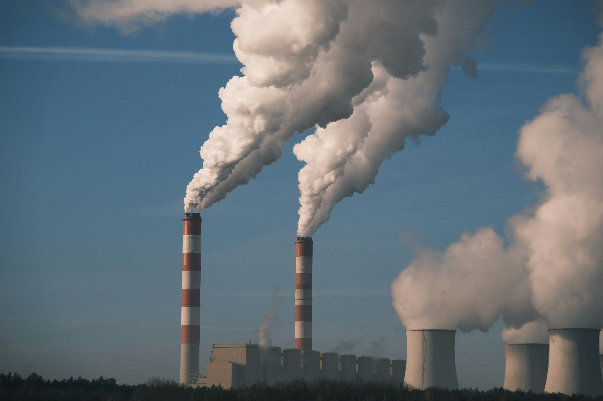

Sustainability Through the Ages
Explore Intel's journey through time, discovering how innovation shaped a more sustainable future for technology and our planet.
Explore Intel's journey through time, discovering how innovation shaped a more sustainable future for technology and our planet.

Robert Noyce and Gordon Moore renamed NM Electronics to Intel Corporation.

Intel debuts the 4004, the world's first commercial microprocessor.

Launch of the 8086 processor, creating the x86 architecture.

Intel introduces the 386 processor with 32-bit architecture.

Intel’s highest annual greenhouse gas emissions.

Intel launches Responsible, Inclusive, Sustainable, Enabling goals.

Intel commits to net-zero greenhouse gas emissions.

Achieved 99% renewable electricity usage globally.

Intel hosts its first Sustainability Summit.
Scroll to view timeline | Hover over cards to learn more!